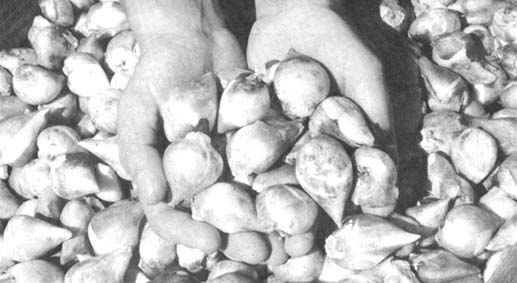
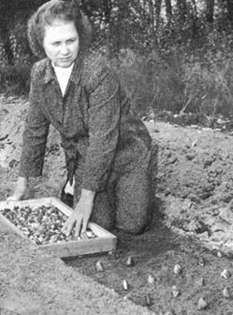
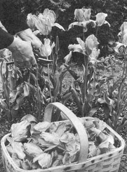
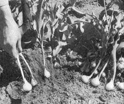
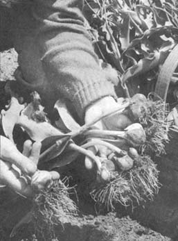
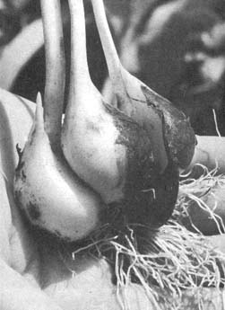
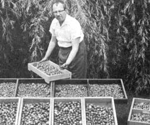

Tiptoe Through The Tulips ... Profitably!
By Betty Brinhart
September/October 1972
BY BETTY BRINHART
THE TULIP BULBS YOU SEE ON THE
OPPOSITE PAGE. ARE JUST AS GOOD AS
MONEY IN THE BANK TO THE FOLKS WHO
GREW THEM . . .AND BETTY BRINHART SAYS
THAT RAISING THE FLOWERS CAN BE AN
IDEAL MINI-BUSINESS FOR FARMSTEADERS
AND BACK-TO-THE-EARTH PEOPLE E.
Green thumbers who want to start a small business on a shoestring might be well advised to try growing tulips for profit. The market for bulbs is far from saturated and-contrary to popular belief-the colorful, hardy plants grow as well in this country as in Holland when planted in an organically enriched soil.
There are more ways to make money growing tulips than you might have imagined, too. You can sell bulblets and flowering-sized bulbs in the fall and potted, "forced" flowering tulips find a ready market around Easter. The rest of spring and summer (especially around Mother's Day) you can supply fresh-cut flowers to florists, greenhouses and individuals. I even pick up welcome extra dollars by selling articles about and photographs of my tulips . . . and find that garden clubs and schools will often pay for lectures and slide shows about raising the flowers.
My husband, Jay, and I fell into the part-time tulip business here in West Hatfield, Massachusetts by accident nearly 20 years ago when a magazine editor asked me to do an arficle on the flowers. At that time I intended to grow tulip bulbs for just one year as research for the piece . . . little realizing that I'd wind up with a delightful spare-time enterprise that still nets me almost $1,000 a year, and which could produce a cash flow at least three times that any time we choose! I'm sure, with just a little help, you can do as well.
HOW TO START ON A SHOESTRING
If you intend to grow tulips on a commercial basis, I recommend you start with at least 100 bulbs each of three different colors (the most popular hues are white, pink, bright red, brilliant yellow and the soft pastel shades) of the Cottage, Darwin, Breeder, Single Early and Lily-Flowered varieties. These are sure sellers and will return your investment quickly. Later, as your new business begins to roll, you can add a wider selection for your customers to choose from.
The only trouble with this "minimum" start, of course, is that-small as it may eventually seem to you-it can be expensive in the beginning. One hundred bulbs each of three colors of five different varieties adds up to 125 dozen bulbs. At even a bargain $1.75 a dozen, that can run into money . . . unless you find a way around the problem, as Jay and I did.
We waited until late fall and approached the manager of our local garden shop. When we stated we'd be happy to take any unsold bulbs off his hands for a flat $5.00, he gladly agreed and loaded us down with 30 dozen assorted colors and varieties. We then cut costs further by passing up high-priced bulb food in favor of our own freshly made, 14-day compost.
You can plant tulips until the ground freezes hard (late plantings, however, should always be mulched after the first hard freeze to prevent alternative freezes and thaws that could force the bulbs to the surface), so don't go bargain hunting too early. If your search for remainder bulbs isn't as fruitful as ours, there's still no reason to pay retail prices for your initial stock. Most nurseries offer sizable discounts to the trade or to individuals who buy early and in large quantities. It never hurts to ask. (Although we don't know if the company offers such a discount, a reputable source of tulip bulbs is DeJager and Sons, 188 Ashbury St., South Hamilton, Mass. 01982-Ed.)
Bargain priced or not, always carefully check the tulip bulbs you buy for disease, insect infestation and rot. They should be very firm with a crisp, brown jacket. No tulip bulb is a bargain at any price if it brings disease or insects to your garden.
LOCAL GARDENERS ARE YOUR MARKET
Like any other bulbous plant (they are true bulbs), tulips will do well in any soil that'll produce a decent crop of onions. As a matter of fact-after they've been growing under particular soil and climatic conditions for two years-the plants become adapted to the circumstances, generally flower much better than imported bulbs and seem more resistant to disease than sets brought in from another area. Locally gown tulips, in other words, are a good buy for the gardeners you'll be selling to.
Just growing tulips for market, however, is a far cry from producing the very best plants possible. Sooner or later, if you care about the bulbs you sell, you'll want to approach the whole matter on a more scientific basis.
tulips and their potential income
You don't need a lot of land to get into the tulip business. We have a plot that measures only 160 x 160, of which 2/3 is taken up by house, garage and lawn. Of the remaining 1/3, half is used for our family garden . . . leaving only 1/6 of a 160 x 160 plot for our part time tulip business. Still-by selling forced plants, cut flowers and the bulbs themselves . . . and by speaking about, writing on and photographing our tulips-we earned nearly $1,000 last year with our sideline enterprise. Here's a breakdown:
Fall
Sale of around 75 dozen tulip bulbs of different varieties ranging from $2.25/dozen to $3.75/dozen for the more specialized varieties - $206.25 The planting of a huge circular bed on a private estate which took 225 bulbs of a white and 225 bulbs of a red variety - $129.38
Labor for above - $ 50.00
Easter
Twenty-seven pots of forced tulip bulbs-five per pot-to local chain store at $2.75 each - $ 74.25
Mother's Day
Fifty-three dozen cut flowers of yellow and pink varieties to local florists at $1.25 a dozen -$66.25
Thirty-one dozen cut flowers to private individuals at $2.00/dozen -$62.00
Color transparency taken of the tulip beds in full bloom and sold to gardening magazine as possible cover shot -$75.00
Seven black and white, 8 x 10 photos sold to a magazine(@$7.50 each) to help illustrate an article on tulip culture -$52.50
Article on tulip culture to a major magazine - $200.00 Speaking engagement on tulip growing at local garden club -$50.00
TOTAL INCOME FOR ONE YEAR -$965.63
After subtracting the expenses of pots, spray, bulb food and plastic bags, we still netted more than $900.
Over the years we've noticed that the money we've derived from tulips has been directly proportionate to the time we spent growing, forcing and selling the bulbs and cut flowers. In other words, the only limiting factor to the amount of money you should make when growing tulips for profit is time. The more time you give the project, the greater your income should be.
Because Jay and I have other obligations in life (such as raising a growing family), our tulips are mainly regarded as just a hobby and we give them little more time than one or two hours each night during the spring season and weekends. If we were to go into the tulip business full scale, we could easily triple our income.
tulip varieties EARLY BLOOMERS The DUC VAN THOL, first tulip to flower in our garden, is a dwarf variety with small slightly pointed flowers on five-to-six-inch stems. It comes in a wide range of true colors and is excellent for rock gardens. You should grow at least three shades of this one.
SINGLE EARLY tulips blossom on the heels of the Duc van Thol. Their colors are brilliant and their blossoms quite large on 15-inch stems. This variety will please your customers by standing up well under adverse weather conditions. It may be used in any informal setting (where it'll give good color for at least two weeks) and is almost unexcelled, in formal plantings. Include this one when you buy your first bulbs.
TRIUMPH is a cross between the Single Earlies and Darwins and its huge, firm cups on 22-to-24-inch stems comes into bloom right after the Single Earlies. We have four colors of this newer variety in our plantings and find they sell well. Triumph also produces a good supply of bulblets each spring.
The DOUBLE EARLY tulips (which resemble small double peony blossoms more than they do tulips) are beautiful but not too popular with the customers who prefer single varieties. Double Earlies bear on 10-inch stems and are excellent for edgings in front of taller tulips and in formal beds by themselves. They do not produce as many new bulblets each spring as the single varieties but are worth growing anyway. We encourage sales of this variety by mass planting them on our lawn in the fall. Customers, who come to admire the Double Earlies each spring when they're in full bloom, usually order on the spot. Double Earlies bloom in several brilliant colors, with pink being the most popular.
MID-BLOOMERS
MENDEL, a lovely cross between the Duc van Thol and Darwin, is a must for your list. Its range of color is tremendous (a shade to please every customer) but it's best to stick to about six hues until you're well established in business. The Mendel's flowers, which are borne on 22-inch stems, are as beautiful as any you can grow.
MAY BLOOMERS
DARWINS are-by far-the most popular of the taller, robust tulips. They produce fabulous cups (each has a rectangular base with square-tipped or rounded sepals and petals) on 30-inch stems. Some Darwins have been crossed with Cottage tulips to produce even better growing and flowering characteristics and all of this variety do well in formal arrangements (either as accent plants against contrasting backgrounds or in groups throughout the perennial border). You'll want to include Darwins on your first list.
COTTAGE tulips are preferred by many home gardeners because the variety is excellent for general planting purposes, comes in brilliant colors and bears cups on 20-inch stems. Cottage flowers have a square or somewhat rounded base and pointed or rounded tips. Another must for your first planting.
BREEDERS are the oldest and most majestic tulips grown in this country. Customers love them and the variety is always a sure seller. The Breeder flower-with its rounded base and square-ended sepals and petals-is distinctive. Dutch varieties have oval or cup-shaped blooms in hues of brown, purple, bronze or red shading to a base (often stained blue, green or bluish-black) of white or yellow. The English varieties have a ball-like,flower with an unstained base of white or yellow.
SPECIAL VARIETIES
DOUBLE LATES are very similar to the Double Earlies, but have larger blooms on 23-inch stems. Although quite attractive and good bulblet producers, Double Lates do not stand up well under heavy spring rains and aren't too popular with the gardening public. The variety will sell when grown in mass displays (a cluster of eight bulbs is especially nice) to encourage spring visitors to order on the spot. . . but you should go easy when thinking about growing these for sale.
PARROT tulips are fantastic eye-catchers in any spring display of flowering bulbs but forget trying to sell them. The variety's feathered petals hardly resemble conventional tulips and customers tend to shun them. The crisp blossoms of the giant Parrot often grow too large for their weak stems, too, and rain often snaps them offat the height of their beauty. This variety does make an excellent forcing tulip, however, and-if grown-should be raised primarily for this purpose.
EMPEROR tulips are steadily gaining in popularity but aren't for culture in the United States . . . at least not in New England. We've tried them time and again but simply can't get the bulbs to regain flowering size the second or third year. Maybe they do better in soil that's richer and darker than ours, though, so you might try one color ifyour plot is quite fertile. If that one color does well, you can then plant others.
REMBRANDTS have long been acclaimed for their beauty by tulip lovers. Actually sports (mutants) of the Darwins, Rembrandts produce vividly colored striped and flamed flowers. Since they're what most customers think of as "tulip shaped", Rembrandts do sell reasonably well . . . but you'd better limit your plantings of the sports until folks in your area become acquainted with them.
The FAMOUS BOUQUET tulips are beautiful but expensive . . . too expensive for us to experiment with and we haven't tried them yet. They are available in a wide range of brilliant colors and color combinations, and one bulb alone produces up to five blossoms.
BYBLOOMS and BIZARRES, both sports of the Breeders, are less familiar tulips that you should not grow at all or-at least-go easy on until your operation is well underway. The Bizarres have purple or slightly brown stripes on a yellow background while the Byblooms are white with scarlet, purple, violet or pink stripes.
The BOTANICAL, or SPECIES, tulip is a dwarf or semi-dwarf variety with very little sales potential. It's mainly used only in rock gardens and very small places where larger tulips would be out of place. Better holdoff on this one until you've built your business to the point where you can afford to gamble.
LILY-FLOWERED tulips-a cross between the pink Darwin and Cottage (Retroflexa) varieties-have reflexed petals that resemble those of a lily. If you feel you need to grow something entirely different to attract attention, give these a try. We've had good luck selling bright yellow Lily-Flowered tulips and I can sincerely recommend the lighter colors of this variety as a sure sell as cut flowers to local greenhouses and flower shops.
TESTING THE SOIL
Market tulips should be looked upon as a crop-the same as vegetables or grain-and, in order to produce the best harvest every spring, the plants must receive a balanced diet from the earth in which they grow.
That balanced diet for tulips happens to be more phosphorus and potash than nitrogen and the only way to determine the exact fertility of the area you intend to plant is with a soil test. You can conduct such a test yourself with an inexpensive kit or send a paper carton of the earth in question to your county agent or State Agricultural College for a free analysis.
If you inform your State Agricultural College Test Lab that you wish to grow tulip bulbs organically at the time you send in the sample, the return report you receive will tell you exactly what natural fertilizers and how much of each to add to your soil to bring it into balance for maximum growth. The booklet included with your test kit-if you run the analysis yourself-should give you the same information.
The pH content (degree of acidity or alkalinity) of your plot will also have a direct bearing on the health of your crop. The scale runs from zero (acid) to 14 (alkaline) and tulips grow best in neutral or near-neutral soil (a pH reading between 6.5 and 7).
SOIL PREPARATION AND FERTILIZATION
You'll harvest the largest bulbs and a good quantity of bulblets every spring if you plant tulips in well-drained loam that's fortified with organic matter in all stages of decay. If your plot doesn't appear so ideally suited to cultivating the flowers, though, don't despair. Any soil, anywhere in the country, can be brought to its peak fertility with the addition of green manures (cover crops such as soybeans and red or sweet clover grown expressly to be turned under to add organic matter to the earth), compost (which tulips dearly love so use all you want), leaf mold, well-aged manures of all kinds and any other organic matter that will decay readily. Stay away from commercial bulb foods as they tend to burn the delicate roots.
Bone meal is an excellent plant food as is granite dust and phosphate and potash rock. Always use these natural fertilizers according to directions, however, as-just like commercial plant foods-they can upset the balance of your soil if applied too heavily.
An excess of nitrogen-rich fertilizer-such as cow manure -can also be disastrous. Such plant food causes new bulbs to grow too rapidly in the spring and-because their jackets cannot keep up with the faster inner growth-long, deep, horizontal splits appear in the bulbs' outer skins. Disease germs and insects soon invade these gashes and, eventually, destroy the valuable bulbs. The tulip plantings that do survive such attacks usually wilt in summer storage and lose their vigor. To be on the safe side, then, use one part cow manure to three parts soil and stronger manures (such as chicken) in a ratio of one part to six parts dirt.
Crushed or dolomite limestone (never, never use slaked or quicklime!), wood ashes and ground oyster shells are all good for correcting acidity. Too much alkali-characterized by an accumulation of soluble salts or large amounts of sodium that are toxic to plants-can be corrected with the addition of organic matter.
We like to fertilize our tulip beds in the fall and feel that nothing surpasses organic plant foods (applied two weeks before setting the bulbs) for good bulb culture. We use nothing else and work reasonable amounts of well-decayed compost and aged or dehydrated manures of all kinds into the soil while working the beds. When we plant in trenches we put the natural fertilizers in the bottom of each shallow ditch before setting in the bulbs or bulblets.
Tulips do best in full sun, although they flower a few days longer in partial shade. If you have a sunny location but its drainage is bad, check to see if a hardpan (impenetrable layer of very fine, compacted soil particles caused by lack of humus and overtillage) exists beneath your topsoil. If that's the trouble, break up the hardpan with deep spading or plowing in the fall. This will enable excess water to seep quickly into the subsoil, thus warding off rot in the newly planted bulbs.
In extreme cases of poor drainage, you may have to plant your tulips in raised areas much as they do in Holland, and dig ditches to lead excess water from the beds. You might also set your bulbs on an eastern or southern slope.
WHEN TO PLANT
The best time to plant tulips in your area depends upon the month that cold weather moves in to stay. Early spring-flowering varieties are best set the first week of October up here in Massachusetts . . . and May-flowering varieties should be in the ground by the end of October.
In areas of mild winters early-flowering tulips should not be planted before the middle of October and late-flowering ones should be set only after the second week in November. These planting dates give the bulbs sufficient time to develop roots before the ground freezes hard.
Those bulbs planted too late in the season to develop an adequate root system must be mulched with 4 inches of straw or spoiled hay, to prevent frost from bringing them to the surface and ruining the planting. Apply the mulch after the ground freezes hard and remove it as early in spring as possible.
HOW TO PLANT YOUR TULIP BULBS
The manner in which you plant your bulbs will determine the number and size of the bulbs and bulblets you'll harvest the following spring. For instance, deep plantings of 6 to 8 inches will give you one large bulb and 2 to 3 bulblets that will reach flowering size in three years. The flowering quality and size of the main bulb will be as fine as-if not better than-the original one placed in the ground the preceding fall.
Where soils are well drained and of excellent texture, bulbs may be set 10 inches deep. Such deep planting delays flowering by a few days . . . but the size and quality of the new bulbs more than make up for the slight wait.
We've found, after nears of experimenting, that best all-round bulb production occurs for us when we place our sets six inches deep. Based on this experience, we set our large flowering bulbs six inches apart in 6-inch-deep trenches spaced six inches from each other. We never plant any shallower than this for we've found that bulbs set closer to the surface than six inches have difficulty regaining flowering size in the spring.
If you wish to plant your barge bulbs in beds, or borders, to add color to your spring garden while they're producing new bulbs for you . . . place the sets in the ground with a bulb setter or small hand trowel after the soil has been properly worked and fertilized. The plantings, again, should be six inches deep, and six inches apart for best bulb production and bloom.
HOW TO PLANT BULBLETS
You'll have plenty of bulblets to set by the beginning of your second year and we find we get best results from ours when we plant them in trenches in the garden. These trenches measure about 28 inches wide and six inches deep, are spaced two feet apart and run as long as the garden. The trenches may run in any direction but laying them out north to south seems to give the best results.
We lift the top six inches of soil completely out of each trench, set it to one side and loosen the soil in the bottom of the ditch with the shovel. We then spread out an inch-thick layer of pulverized compost to which dehydrated cow manure, bone meal and lime have been added. This natural plant food is worked lightly into the soil and the trench is raked smooth.
The bulblets are then set in rows two inches apart running the length of the trench. We usually manage seven rows across each excavation depending upon the size of the bulblets. The largest bulblets are set first so that those which flower will be in a big enough group to add a splash of color to the garden. Stakes, with the name and color of the variety just planted are forced into the ground at the head of each planting. The topsoil is then thrown back into the trench and firmed gently with the foot to eliminate air pockets.
SPRING CARE
If mulch has been used, remove it as soon as possible in the spring (tulip leaves have a tendency to become deformed if forced to penetrate a thick layer of dead leaves, hay, etc.). When the plants are four inches tall cultivate among them with a small hand grub hoe to discourage weeds and to eradicate deep frost cracks.
SPRAYING FOR BOTRYTIS
A disease called fire, or botrytis, often invades new tulip plantings during a wet, cold spring. It's a fungus that causes small, round, yellowish, water-soaked spots on leaves and flowers and-as it develops-the spots turn gray and the plants wilt and die. Once started, botrytis spreads rapidly throughout an entire plot of tulips.
To be on the safe side, we spray our plants once a week after growth begins until their buds show color. If you follow our example, use 1-1/2 pounds of any ferbam-type spray per 100 gallons of water.
REMOVING FADED BLOOMS
We're very particular about removing faded blossoms from our tulips because we know that-once diseased petals fall to the ground-the disease can penetrate the soil and remain there to do harm next spring. To further prevent the spread of any possible plant ailments, we burn all the picked blossoms. By the way, removing faded flowers also prevents the formation of seed heads which take needed strength away from good bulb development.
Do not, under any circumstances, neglect your tulip plantings after they bloom. This is the time most critical to good bulb formation and it's important to keep all beds weeded, cultivated, and sufficiently watered until the edge of the tulip leaves begin to brown and the remainder of the leaves turn a dusty green.
LIFTING BULBS
In order-to produce a goodly number of large bulbs for sale, you must lift, divide and store your tulip bulbs every June. Do this job with a garden fork forced into the soil a safe distance from each bulb cluster so as not to injure any of the bulbs. Pry each cluster out of the ground carefully so that you do not snap off any of the brittle stems needed to properly cure the bulbs for summer storage.
Begin by test-lifting a plant that looks as if it has finished growing. Check its bulb cluster. If the larger bulbs are firm and of good size, your plants are ready for lifting. If the bulbs are still small and feel spongy, however, give them another two weeks.
Always lift bulbs on a cool, cloudy day so they'll not be injured by the direct rays of the sun. Scatter the clusters thinly in a narrow trench in the garden with their stems pointing skyward. Then cover only the bulbs (not the stems) with soil. As soon as the leaves turn yellow (this should not take more than a week), uncover the clusters and remove all bulbs and bulblets from the brown, leather-like pouches. You may want to use gloves for this work as the acid in freshly dug tulip bulbs can cause a harmless rash on tender skin.
DRYING
Put the harvested bulbs in shallow, screen-bottomed trays (ours measure 22" X 15" X 2") and place them in an open, shady area for several days. Make certain each tray is properly marked as to variety and color for easier planting-and selling-in the fall and roll the bulbs about with your hands several times a day to insure even drying. Never place fresh bulbs in the full sun to dry as a hot sun can bake the tender cells and cause rot.
STORING
When their jackets have turned brown and the bulbs feel good and dry, store the trays in an airy, outdoor building or in an attic. The trays may be stacked one on top of the other if each is constructed with one-inch legs to allow breathing space between the layers (to prevent the formation of mildew in storage). Check the bulbs often during the summer. If hot, muggy weather causes mildew to form on them, redry the bulbs in the open shade and store them as before.
BUILDING STOCK AND GRADING
I suggest that you do not sell any tulip bulbs for the first three years. Just keep replanting every bulb and bulblet produced in your garden . . . and you'll be amazed how quickly tulips multiply. Most common varieties will triple in number the very first year and, by the fourth year, you'll have enough to sell for a nice profit (always keeping enough on hand to replant on your lawn to attract customers in spring and to build up your reputation as an outstanding tulip-bulb grower).
After the fourth year, grade all bulbs and bulblets according to size. Sell the largest, plant the medium-sized ones in beds and borders for spring color and increased bulb supply and reset the bulblets in garden trenches. Fertilize as before and your supply of bulbs will increase, regardless of sales, until you discover you must build more trays to house them all. After that, if you follow the marketing tips included in this article, your only worry will be producing enough tulip bulbs to satisfy your many customers.
HOW TO FORCE BULBS
Five large tulip bulbs forced to bloom early in a large plastic flower pot will bring in three times as much money as a full dozen bulbs sold for fall planting. Forcing, in other words, is definitely worth your while.
Early-flowering, and Double Early-flowering, tulip varieties are best for indoor forcing. Use a potting mixture which consists of two parts rich topsoil, and one part each of sifted compost, leaf mold and sand. Add to this a handful of bone meal, and one of lime.
Fill a number of pots 3/4 full and firm the soil down well. Space five large, sound bulbs evenly on the surface of the dirt in each container. Their tips should be level with the rim of the pot and their fullest side should be toward the outside of the circle (this will cluster the blooms nicely within the very center of the pot). Fill soil in between the bulbs with your fingers and firm it down as well as possible. The tips of the bulbs should just be visible above the surface. Water well.
Tulips must rest for at least 10 weeks under cool, dark conditions in order to stimulate root growth so bury the pots about 20 inches deep behind a hedgerow or building, then cover them with 7 inches of sifted cinders or sand. We place ours in a deep trench and fill in around them with sand until it is level with their surface. We then mulch the area with a six-inch-layer of old hay to prevent the earth from freezing and to maintain cool temperatures.
You may bury your forcing pots in a covered cold frame in the same manner. A root cellar will do, too, if it's dark and maintains temperatures around 40 degrees F. Just remember that, even though low temperatures are necessary for good root growth, the soil in the pots must never be allowed to freeze. If it does, root growth will stop.
All forcing pots should be brought indoors to a sunny window or greenhouse bench before the middle of February. Check the root systems of several pots before bringing them in, however. This is easily done by simply turning the pots over. If roots protrude through the drain hole (and top growth is at least two inches tall), the bulbs are ready.
After bringing the pots indoors, keep them away from direct sunlight for a day or two or until the sprouts turn green. The plants may then receive full sun except during the brighter hours. When their leaves turn a dark green, they may be given full sun throughout the day. Keep the soil in the pots moderately moist at all times to stimulate rapid growth. An application of liquid organic plant food once a week will help produce healthy plants and large flowers.
Early-flowering tulips will bloom three to four weeks after being brought in, and later varieties eight to nine weeks. Knowing this, you can judge pretty accurately when you must bring pots in to force the blooms into full bud for Easter or any other selling date.
HOW TO MARKET BULBS, FORCED BULBS AND CUT TULIPS
To sell tulips, you must first let people know that you have them for sale and an advertisement in the local paper does wonders. Once your business becomes known you'll have far more customers than you have bulbs and you won't have to advertise anymore (at least that's the way it's worked for us).
We keep our business before the public by planting three large flower beds and two long borders in our front yard where passersby can see them. This encourages visitors to stop and order "on the spot" in the spring when our tulips are in full bloom.
The first fall that you've built your stock of bulbs and bulblets to the point that you're ready to begin sales, grade them according to size and have them certified insect and disease-free by your Agricultural County Agent. Then take your best samples to all possible buyers . . . such as garden shops, feed and seed companies, greenhouses, department stores and supermarkets. If the managers of any of these establishments are interested but do not want to buy outright, let them have so many dozen on consignment. This means that they'll pay you a certain price for every dozen bulbs sold and withhold a small profit for themselves (which should be agreed upon in advance). You must then take back all unsold bulbs-if there are any-after freezing weather moves in.
Customers buy ready-packaged goods faster so, to increase your bulb sales in such markets, package them in clear plastic perforated bags on which is listed price, color and variety. This is easily done by typing the information on white paper and stapling it to the top when closing each sack. Sell 12 large bulbs, or 18 medium-sized ones for the same price. Prices may vary for different varieties. The common tulip, known to all, sells best. Gardeners shy away from double, ruffled, or Parrot varieties.
An ad in the local paper, giving your home address and price of bulbs, usually brings a flock of customers. Treat them with courtesy and give detailed instructions on how to grow large, beautiful tulips (satisfied customers return time and again for more bulbs).
Many gardeners who include tulips in their spring landscape plans like to have some variety in bloom throughout a two-month period. You can be of great help to these greenthumbers (and increase your sales at the same time) by just offering them bulbs that'll flower in sequence from March until June. Learn about the general types of tulips, their characteristics and blooming dates . . . how each performs under normal growing conditions in different parts of the country and which ones are more popular with florists and the gardening public. Not only will you be able to give your customers better advice . . . you'll avoid costly mistakes and save valuable time and money. It's a good idea, too, to keep abreast of all new developments by studying bulb catalogs.
We've found that it does wonders for sales to give an extra bulb free with every dozen. We also deliver an order free if two or more dozen bulbs are ordered. Nothing pleases a buyer more than getting something for nothing.
As your number of flowering bulbs increases, try advertising in one or more of the gardening magazines. If you have a large supply of bulblets, offer them for so much a pound to those gardeners who enjoy growing their own flowering bulbs. There are a surprising number of such folks.
If you do not wish to chase around to make bulb sales in the fall, start a bulb shop of your own as early as July after your bulbs have dried off nicely. To increase your profits you may want to offer such necessary items for good tulip culture as organic fertilizers, lime, bone meal and planting tools. Keep your bulbs in open bins to which wood shavings have been added to keep them dry. Clearly mark each bin so customers may serve themselves. To attract customers who would not ordinarily stop, place a large sign above your door which says, "Organically-grown Tulip Bulbs Mean Better Bloom."
Your best approach in marketing forced, potted tulips is to let the plants sell themselves. Take one or two of your best pots as samples to possible sales outlets such as greenhouse shops, florists and supermarkets. If your plants are dark green and healthy with full, brightly colored buds you'll have no trouble in talking the managers into helping you sell them.
When your plants sell well at an outlet in the spring, contact the manager in early fall and ask him how many pots he thinks he can handle the following spring. Through such methods you'll eventually build up a profitable forced-bulb business for yourself. It may even develop to such a great extent that you'll have to construct a greenhouse to supply your many outlets.
Even though you do not sell bulbs the first 3 years, you should start money rolling in the very first spring by selling cut tulips. If you can find enough markets for them, your invested capital will be returned twofold by the time you sell your first bulb.
Ordinarily, people don't think of tulips as cut flowers . . . unless you remind them and approach potential customer-greenhouses or floral arrangers who might like to use a few tulips in their spring showpieces-well in advance of special holidays. If some of your early varieties are already in bloom, take along samples of the lighter shades or pastels that are preferred by professional arrangers. Count the buds of your lighter shades before leaving home so you can tell your customer how many dozen you'll be able to supply. Flower arrangers especially like tulips that are just beginning to unfurl from a loose bud.
It's usually best to let the greenhouse manager or florist determine the price of your cut tulips . . . he knows the market and just how much he can get for the plants to realize a sensible profit for himself. Most professionals are very fair and will give you the best possible break . . . but be sure to agree on a set price per dozen before you deliver.
Don't hesitate to contact potential buyers out of town if you have plenty of buds. Use the phone if you can't go in person and offer them only tulips that are showing good color but are still unopened.
A small ad in the local paper during the blooming season will usually bring in extra cash . . . stress the birthdays and weddings. You can charge private individuals slightly more per dozen than you do the greenhouses and floral shops, of course, since the individuals do not have to realize a profit from their purchases.
To encourage large business establishments-hotels, motels, restaurants and banks-to buy your tulips, present them with a free bouquet of your finest specimens. You might even work out a deal with the better restaurants to put three blossoms on each table every morning throughout the season.
Whenever you have extra cut flowers, you can get a lot of free advertising by simply distributing colorful bouquets-free of charge-to hospitals, old-age homes, children's wards and to elderly people in your neighborhood. Tulips are always welcomed with open arms, and will surely aid your reputation as top tulip-grower in the area.
Always cut tulips in the early morning, and take stems with just one leaf (every leaf removed from the plant will decrease the size of that bulb by a fraction of an inch). Plunge the stems into a container of warm water, then place container and all in a cool, dark room for several hours before delivery. For greater beauty in bouquets, always use two contrasting colors . . . such as white tulips with red, or yellow with lavender.
Regardless of how you decide to turn your tulips into a cash crop, never be afraid to knock off a few cents for outlets that need to make a slight profit on everything they handle. It's far better to sell 10 pots of forced blooms for a few cents less than not sell any at all.
One word about licensing and inspection: as long as you grow tulips on your own land, you don't need a license to sell them unless you set up a shop in which you sell other gardening items too. And, as long as the bulbs are sold within the state, no inspection is necessary. At least, that's the way it is in Massachusetts . . . but be sure to check your own state. If you decide you want to ship out of state, of course, your bulbs must be inspected for insects and/or disease.
|
 PHOTOS BY J.F. MICHAJLUK Every fall we plant thousands of bulblets five to seven across in trenches. Although this phase of tulip growing is the most tedious and hardest on back and leg muscles, it's very important . . . for most of the bulbs we sell develop from such sets. |
 Once the bulblets are in bloom, Jay inspects them for possible new hybrids. We've produced several entirely new Rembrandts of our own and two sports. |
 All tulips which have not been used as cut flowers, regardless of variety, are removed as soon as they begin to fade. This prevents the spread of possible disease and gives us larger (and more) bulbs. |
|
 Tulips should be lifted carefully (so that the brittle stems do not snap off the bulb clusters) with a garden fork in June and stored through the summer. This produces vigorous bulbs for autumn sale. |
 There is no better fertilizer for tulips than well-made compost. These firm bulb clusters owe their health to the richly composted soil clinging to their roots. |
 After lifting, all tulip plants should be heeled-in a shallow trench for a few days so that the nutrients in their stems can move down to the bulbs where they're stored for future growth. Bulbs so treated keep better and flower well the following spring. |
|
The leather-like cover of this bulb cluster has been removed to show how tulips multiply in just one year. The one bulb planted last fall has produced two large bulbs ready for sale, one medium-sized bulb that will be ready for sale next spring and three bulblets. |
 A fraction of the bulblets grown in our garden trenches are shown graded according to size as they dry in trays. |
 |